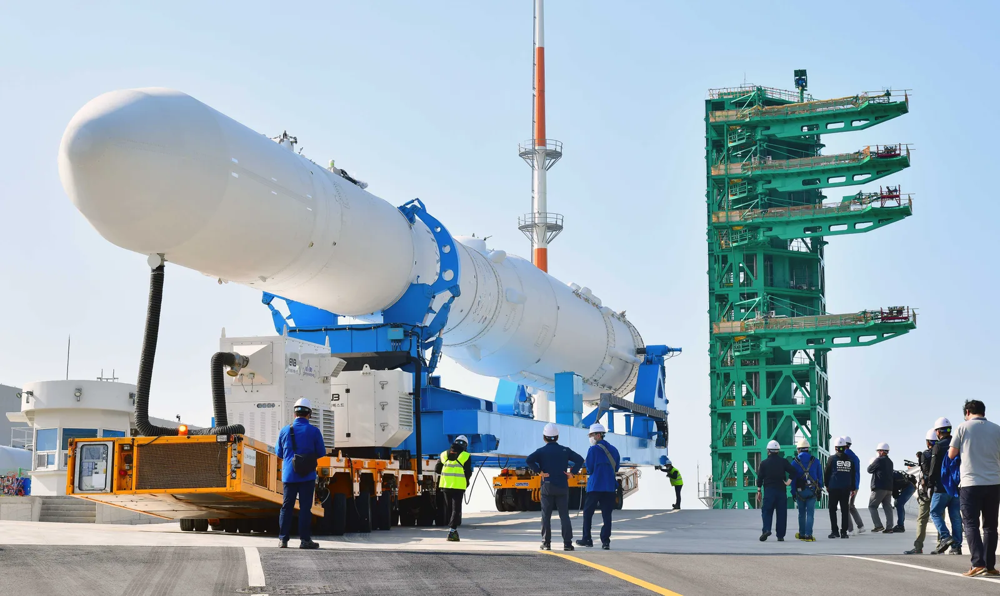
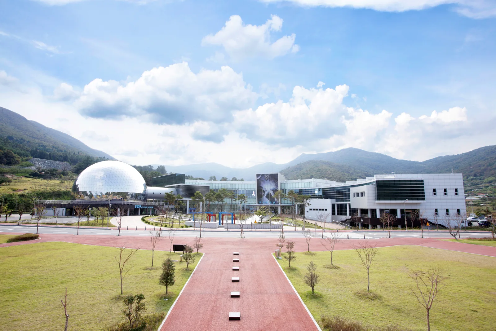
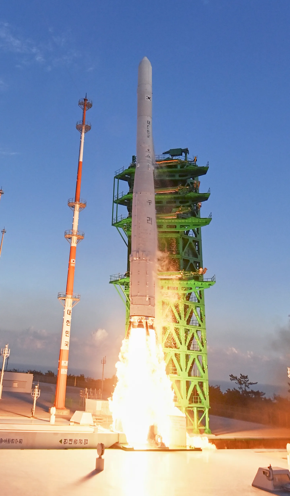
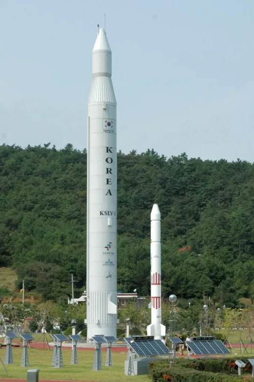
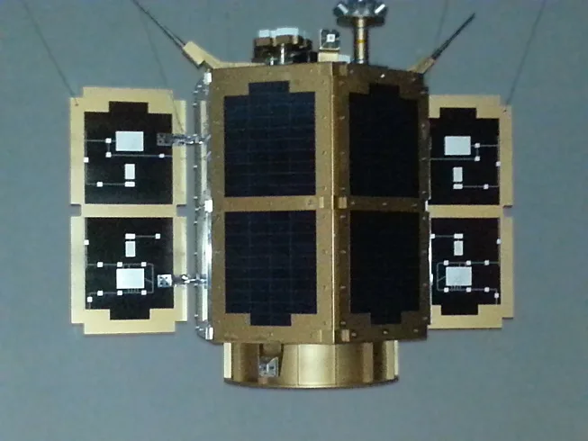
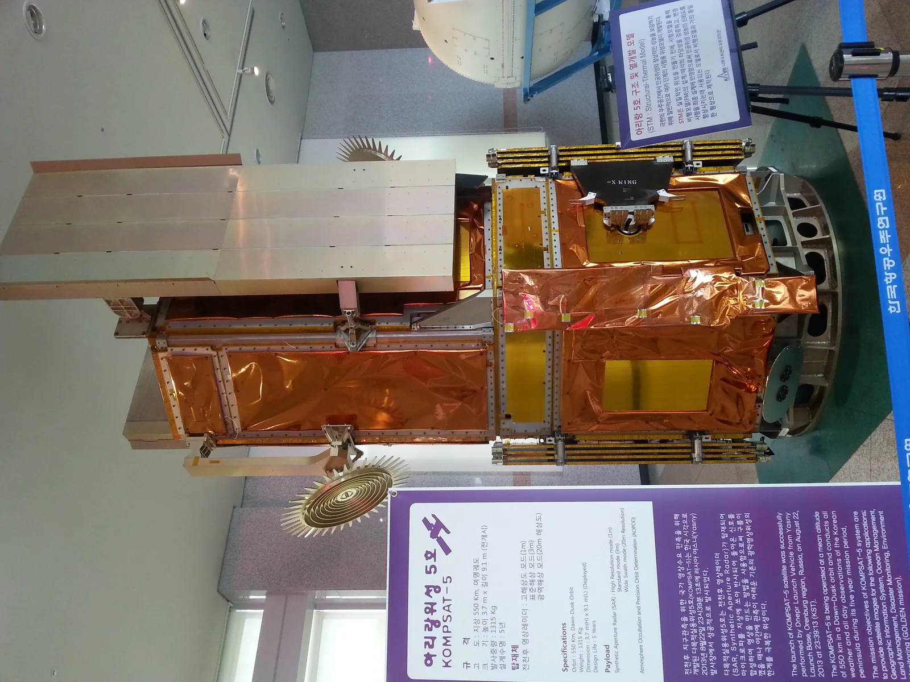

▲ 발사 전 제2발사대로 이송 중인 누리호. 녹색 구조물이 발사대 타워다
전남 고흥군 봉래면, 좁은 반도 끝자락에는 대한민국에서 유일하게 로켓을 우주로 쏘아 올리는 곳이 있다. 나로우주센터(Naro Space Center)다. 2009년 개관 이래 나로호와 누리호를 합쳐 3번의 실패와 4번의 성공을 겪었고, 2025년 11월 27일 누리호 4차 발사가 성공하며 '민간 주도 우주시대'의 첫 발사체로 기록됐다. 발사 당일에만 접근이 제한되는 발사장이지만, 평소에는 우주과학관을 통해 로켓 실물 모형과 전시를 볼 수 있고 연 1~2회 특별 개방 기간에는 발사대까지 직접 둘러볼 수 있다. 이 기사는 센터의 역사부터 누리호 발사 현장, 우주과학관 전시·체험, 발사대 견학 가능 여부, 인근 우주발사전망대 이용 정보까지 방문 순서대로 정리했다.
1. 2009년 개관 — 국내 유일 우주발사체 발사기지

▲ 나로우주센터 우주과학관 본관과 은빛 돔 모양의 4D돔시어터 ⓒ 한국항공우주연구원(KARI), 공공누리 제1유형
나로우주센터는 2009년 6월 전남 고흥군 봉래면에 문을 열었다. 국토 최남단에 가까운 반도 지형과 삼면이 바다로 열려 있어 로켓 발사 후 낙하물이 바다로 떨어지도록 설계할 수 있다는 지리적 이점 덕분에 부지로 선정됐다. 이후 16년 넘게 이어진 도전에서 나로호(KSLV-I) 1·2차 발사(2009, 2010년)는 위성을 목표 궤도에 올리지 못해 실패했고, 3차 발사(2013년 1월 30일)에서야 처음 성공했다. 이어 개발된 누리호(KSLV-II)는 시험발사체(2018년)와 2차(2022년), 3차(2023년) 발사에 성공했지만 1차 실전형 발사(2021년 10월)는 실패했다. 2025년 11월 27일 진행된 누리호 4차 발사는 민간 기업 한화에어로스페이스가 체계종합기업으로 참여한 첫 발사이자, 우주항공청 출범 이후 첫 발사, 그리고 국내 최초의 야간 발사로 기록됐다.
2. 누리호 발사 현장 — 4차 발사까지의 기록

▲ 2021년 10월 21일, 누리호 1차(시험) 발사 당시 제2발사대를 떠나는 순간 ⓒ 한국항공우주연구원(KARI), 공공누리 제1유형
누리호 4차 발사는 2025년 11월 27일 새벽 1시 13분, 제2발사대에서 이뤄졌다. 이번 발사에서는 주탑재위성인 차세대중형위성 3호를 고도 600km, 오차범위 35km 이내 궤도에 안착시켰고, 나머지 부탑재 위성 12기도 함께 궤도에 올리며 총 13기 위성 임무를 완수했다. 누리호는 2026년 5차 발사(초소형위성 2~6호), 2027년 6차 발사(초소형위성 7~11호)를 앞두고 있어, 앞으로도 발사 시기에 맞춰 고흥을 찾으면 실제 발사 장면을 볼 기회가 이어질 전망이다. 발사 일정은 한국항공우주연구원과 우주항공청 공지를 통해 사전에 공개된다.
누리호 4차 발사 성공 기사 확인 가능3. 우주과학관 — 상설전시·로켓 실물 모형·3D영상관

▲ 우주과학관 야외전시장의 실물 크기 나로호 모형. 뒤편에 소형 과학관측로켓(KSR) 모형도 보인다 ⓒ Wikimedia Commons
우주과학관은 나로우주센터 부지 내에 자리한 전시·체험 시설로, 발사장과는 별도로 상시 개방된다. 실내는 기본원리관·로켓전시관·인공위성관·우주탐사관·달탐사관 등 상설전시관과 실물전시관, 3D 영상관으로 구성돼 있다. 로켓전시관에서는 국내 발사체 개발사를 시간순으로 볼 수 있는데, 최초 액체추진 로켓부터 누리호까지 이어지는 전시물이 마련돼 있다.

▲ 우주과학관에 전시된 과학기술위성 2C호(STSAT-2C) 모형 ⓒ Wikimedia Commons

▲ 다목적실용위성 5호(아리랑 5호) 구조·열개발 모델(STM). 실제 위성을 만들기 전 시험용으로 제작된 모델이다 ⓒ Wikimedia Commons
야외전시장에는 실물 크기 나로호 모형과 국내 개발 과학관측로켓 KSR-Ⅰ·Ⅱ·Ⅲ 모형이 세워져 있어 로켓 크기를 실감할 수 있다. 전시 심층안내(해설)는 11시·14시·16시 하루 세 차례 30분씩 운영되며, 주말에는 최대 30명 선착순으로 '우주과학교실' 체험 프로그램도 진행된다.
4. 발사대 견학 — 상시 개방은 아니다
가장 많이 궁금해하는 부분이 발사대 접근 가능 여부다. 결론부터 말하면 나로우주센터 발사장(발사대)은 평소에는 개방되지 않는다. 발사 관제·안전 구역인 만큼 상시 견학 코스에는 포함돼 있지 않다. 다만 한국항공우주연구원은 2026년 5월 24~25일 이틀간 누리호 발사대와 보관동 내 누리호 인증모델(QM)을 직접 둘러볼 수 있는 특별 개방 프로그램을 총 1,500명 규모로 운영한 바 있다. 참가 신청은 온라인 사전 예약 시스템을 통해 접수가 시작되며, 세부 일정과 신청 방법은 한국항공우주연구원 홈페이지와 공식 SNS를 통해 공지된다. 참고로 한국항공우주연구원 본원(대전)의 상시 견학 프로그램은 본관·위성총조립시험센터·위성운영동을 대상으로 하며, 나로우주센터 발사장은 별도 체계로 운영되니 혼동하지 않아야 한다.
나로우주센터 특별 개방 프로그램 기사 확인 가능5. 발사 전날의 발사대 — 이렉터로 이송되는 누리호
▲ 발사 전 이렉터(기립장치)에 실려 제2발사대로 이송되는 누리호. 녹색 구조물이 발사대 엄빌리컬 타워다 ⓒ 한국항공우주연구원(KARI), 공공누리 제1유형
발사 하루 전이면 조립동에 있던 누리호가 이렉터에 실려 발사대까지 이송된 뒤, 발사대에서 수직으로 세워지는 기립 과정을 거친다. 평소에는 이 과정을 직접 볼 수 없지만, 특별 개방 기간이나 발사 당일 언론 공개를 통해 사진·영상으로 공유되곤 한다. 발사대 타워는 로켓에 연료·전력을 공급하는 엄빌리컬 설비와 발사 직전까지 로켓을 고정하는 구조물로 이뤄져 있으며, 발사 순간 이 구조물을 떠나 상승하는 로켓의 모습이 나로우주센터를 대표하는 장면으로 꼽힌다.
6. 우주발사전망대 — 해상 15km에서 발사 장면 조망
발사장에 들어가지 못해도 발사 장면을 볼 방법은 있다. 나로우주센터에서 해상으로 약 15km 떨어진 영남면 남열해돋이해수욕장 옆 언덕에 자리한 고흥우주발사전망대가 그것이다. 지하 1층~지상 7층 규모로, 7층에는 광주·전남권 최초로 설치된 회전형 턴테이블이 있어 다도해와 발사장 방향을 함께 조망할 수 있다. 1층에는 우주도서관과 우주체험 공간이, 지하 1층에는 가족놀이방이 마련돼 있다. 누리호 4차 발사 당일에는 전망대가 무료로 개방되기도 했는데, 정규 발사가 아닌 특별 개방 형태로 운영되니 방문 전 고흥군 문화관광 홈페이지나 SNS 공지를 확인하는 편이 안전하다.
고흥군 문화관광에서 우주발사전망대 정보 확인 가능7. 입장료·운영시간·가는 법
나로우주센터 우주과학관은 오전 10시~오후 5시 30분 운영되며(입장 마감 오후 5시), 매주 월요일과 1월 1일, 설·추석 당일에는 휴관한다. 입장료는 성인 3,000원, 청소년·어린이 1,500원이며, 7세 이하 미취학아동·65세 이상·장애인·국가유공자는 무료다. 3D 영상관을 이용하려면 별도로 2,000원을 추가로 내야 한다. 인근 우주발사전망대는 오전 9시~오후 6시 운영되며 성인 2,000원, 청소년·군인 1,500원, 어린이 1,000원이고 20인 이상 단체·고흥군민·경로 우대 할인이 적용된다.
| 항목 | 우주과학관 | 우주발사전망대 |
|---|---|---|
| 운영시간 | 10:00~17:30(입장 마감 17:00) | 09:00~18:00 |
| 휴관일 | 매주 월요일, 1월 1일, 설·추석 당일 | 공지 확인 필요 |
| 입장료(성인) | 3,000원 | 2,000원 |
| 입장료(청소년·어린이) | 1,500원 | 1,500원(청소년) / 1,000원(어린이) |
| 무료 대상 | 7세 이하, 65세 이상, 장애인, 국가유공자 | 고흥군민·경로 50% 감면 |
| 위치 | 전남 고흥군 봉래면 하반로 490 | 전남 고흥군 영남면 해맞이로 840 |
| 문의 | 061-830-8700 | 고흥군 문화관광과 |
대중교통으로는 KTX 순천역이나 고흥종합버스터미널에서 고흥 시내버스로 환승해야 하는데 배차 간격이 길어 자가용 이용이 사실상 필수다. 내비게이션에는 '나로우주센터 우주과학관' 또는 도로명 주소를 입력하면 되고, 우주발사전망대까지는 차량으로 약 30분 거리다. 두 곳을 함께 묶어 반나절 코스로 돌아보는 일정이 일반적이다.
우주과학관 최신 운영정보 확인 가능✅ 고흥 나로우주센터, 가기 전 체크리스트
· 2009년 개관, 국내 유일의 우주발사체 발사기지
· 나로호·누리호 합산 3번 실패, 4번 성공(2025년 11월 27일 누리호 4차 발사 성공)
· 발사대는 평소 비공개, 연 1~2회 특별 개방 기간에만 견학 가능(2026년 5월 사례)
· 우주과학관은 상시 개방, 로켓·위성 실물 모형과 3D영상관 운영
· 우주과학관 입장료 성인 3,000원, 매주 월요일 휴관
· 고흥우주발사전망대는 해상 15km 거리에서 발사 장면 조망 가능, 성인 2,000원
· 대중교통보다 자가용 방문이 사실상 필수, 두 곳 묶어 반나절 코스 추천